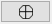
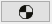
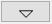
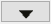
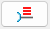
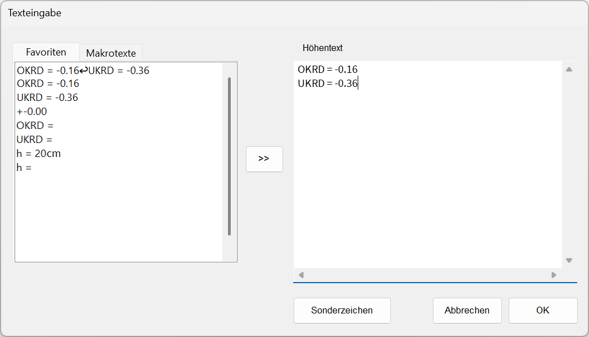
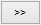
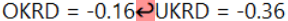

")
")
Darstellung von Höhenkoten im Grundriss.
1.Höhenkotensymbol wählen
§Optional: Sie können die ID und das Symbol einer vorhandenen Höhenkote übernehmen. Klicken Sie dazu auf sowie und anschließend die Höhenkote an, deren Eigenschaften Sie übernehmen möchten.
§Wählen Sie im rechten Menü das gewünschte Symbol aus:




2.Höhentext eingeben
Der Höhentext kann als einzelne Textzeile (Voreinstellung) oder als mehrzeiliger Text eingegeben werden.
·Eine Kombination von freien Texten, Favoriten- und Makrotexten sowie den 10 zuletzt eingetragenen Texten ist in beiden Eingaben möglich.
·Hochzahlen können entweder über den Sonderzeichen-Dialog eingegeben werden, oder indem Sie die Strg-Taste gedrückt halten und die entsprechende Ziffer auf dem Nummernblock Ihrer Tastatur drücken. Achten Sie darauf, dass der Nummernblock auf Ihrer Tastatur aktiviert ist (Taste: Num).
a)Einzelne Textzeile:
§Geben Sie den Höhentext ggf. mit Sonderzeichen  ein. [Höhentext].
ein. [Höhentext].
§Favoriten: Klicken Sie einen bereits eingetragenen Text oder Favoritentext in der Auswahlliste an.
§Makrotexte: Klicken Sie auf die Überschrift Makrotexte, um sich die Liste anzeigen zu lassen. Wenn Sie den Mauscursor über einen Makrotext in der Liste bewegen, wird Ihnen der Textinhalt als Tooltip angezeigt. Klicken Sie einen Makrotext an. Die Variable wird in die Eingabe übernommen.
§Textübernahme: Klicken Sie einen Text in der Zeichnung an, um diesen in die Eingabe zu übernehmen. Mehrzeilige Texte können nicht übernommen werden. Nach dem Anklicken des Textes gelangen Sie direkt zur Ausrichtung des Textes (Winkeleingabe).
§Bestätigen Sie gegebenenfalls mit der Eingabetaste.
b)Mehrzeiliger Text:
§Klicken Sie auf 

-Geben Sie unter Höhentext den gewünschten Text ggf. mit Sonderzeichen ein. Mit der Eingabetaste fügen Sie einen Zeilenumbruch ein.
-Um einen vorhandenen Text aus der linken Spalte an die Cursorposition zu setzen, doppelklicken Sie den Text an. Sie können den Text auch markieren und auf 
-Favoritentexte: Doppelklicken Sie einen bereits eingetragenen Text oder Favoritentext in der Auswahlliste an.
-Makrotexte: Klicken Sie auf die Überschrift Makrotexte, um sich die Liste anzeigen zu lassen. Wenn Sie den Mauscursor über einen Makrotext in der Liste bewegen, wird Ihnen der Textinhalt als Tooltip angezeigt. Doppelklicken Sie einen Makrotext an. Die Variable wird in die Eingabe übernommen.
-Am Absatzzeichen erkennen Sie, dass eine weitere Zeile hinzugefügt wurde. Nach z. B. "OKRD = -0.16" wurde die Zeile "UKRD = -0.36" eingefügt. Der Text wird mehrzeilig in die Spalte Höhentext übernommen.
 |
-Bestätigen Sie die Texteingabe mit OK oder brechen Sie die Aktion mit Abbrechen ab, um wieder zur einzeiligen Eingabe zu gelangen.
3.Höhenkote ausrichten und platzieren
§Geben Sie für die Ausrichtung einen Winkel ein. [Winkel].

|
||||||


Die Höhenkote wird an den Cursor gehängt.
§Schieben Sie die Höhenkote an den gewünschten Platz und legen Sie diese mit Linksklick ab. [Lage].
Die Höhenkote wird platziert. Bei den Höhenkotensymbolen und werden die gefüllten Flächen als Füllungen angelegt.
Siehe auch:
Zugehörige Referenzen: